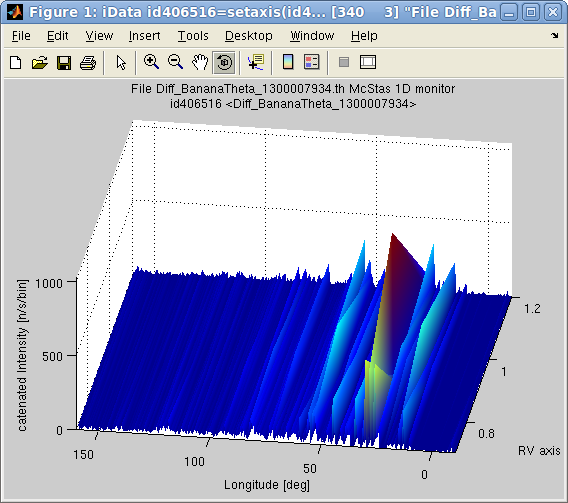

{kind=link}
{kind=link}
{kind=link}
E.
Farhi - iFit/McStas -
$Date: 2013-09-19 16:24:38 +0200 (Thu, 19 Sep 2013) $ $Revision: 1166 $
-
back to Main
iFit Page 
>> results = iData('single_detector_file')which returns a single or an array of iData object(s), that you can plot with e.g. subplot.
>> results = iData('directory') % import everything in the directory, including sim files (files may imported more than once)
>> results = iData('scan_directory/mcstas.dat') % for scans
>> results = iData('scan_directory/mcstas.sim') % for all files from the directory, uniquely.
>> results(1).Parameters
>> results = mcstas('instrument', parameters, options);where parameters is a structure that holds parameter names and values, e.g.
>> results = mcstas('instrument', 'RV=1; lambda=2.36; powder=Na2Ca3Al2F14.laz');
>> monitors=mcstas('templateDIFF', struct('RV',1), struct('ncount',1e6))The last line displays the simulation results. Usual data analysis (display, mathematics, fit, export) can be performed (refer to the iFit and iData documentation).
>> monitors=mcstas('templateDIFF', 'RV=1', 'ncount=1e6'); % same as above
monitors = array [1 5] iData object:
Index [Tag] [Dimension] [Title] [Last command] [Label]
1 id445199 [40 40] 'File Diff_Mono_XY_1299773321...' id445199=load(iData,... Diff_Mono_XY
2 id445212 [40 1] 'File Diff_Mono_Lambda_129977...' id445212=load(iData,... Diff_Mono_...
3 id445224 [40 1] 'File Diff_Sample_Lambda_1299...' id445224=load(iData,... Diff_Sampl...
4 id445236 [340 1] 'File Diff_BananaTheta_129977...' id445236=load(iData,... Diff_Banan...
5 id445248 [170 25] 'File Diff_BananaPSD_12997733...' id445248=load(iData,... Diff_Banan...
>> subplot(monitors)
>> monitors(1).ParametersThe 'monitors' option can be specified to limit the number of monitor files to load after each simulation. Specifying a monitor file name list highly speeds-up the importation of files after each iteration.
>> results = mcstas('templateDIFF', 'RV=1','mode=display');which will launch 'mcdisplay' in the background, and open the resulting figure. No neutron trajectory is shown though, only the instrument geometry.
>> results = mcstas('instrument', 'parameters=values...','mode=info');
>> result = mcstas('instrument', '--info'); % same as above
>> [integral,monitors]=mcstas('templateDIFF', parameters, struct('ncount',1e4));
>> plot(integral); % simple plot, or median surface for multidimensional scans
>> scatter3(integral); % coloured points (possibly in 2D,3D)
>> plot3(integral); % coloured lines in 2D, or volume for multidimensional scans
>> slice(integral); % only for 3D, use slice-o-matic for volume inspection
>> [p,m]=mcstas('templateDIFF', struct('RV',[0.7 0.9 1.2],'L2',[1 1.3 1.5]),struct('ncount',1e4));Then we may plot, as a 2D surface, the integral value for the last (5th) monitor:
>> plot(p(:,:,5));You may look at the instrument parameters used for the scans, e.g.
>> get(m,'RV')which are also available in the Parameters field of the objects.
>> a = squeeze(m(2,:,:)); % extract an 'RV' line, with L2=1.3This methodology also works with 2D monitors assembled along, e.g. a scan line, which creates a 3D volume to explore with slice, or plot or plot3.
>> b = a(:,4); % get 4th monitor on this line
>> setaxis(b,2,'RV'); % define a new axis along the line RV
>> c = cat(2, b); % assemble into a single iData object
>> plot(c,'tight interp'); % plot
>> [solution, monitors] = mcstas('instrument', parameters, options);The parameters, as a named structure, are initiated to their starting value, from which the optimization proceeds. Only numerical parameters can be optimized. Also, it is highly encouraged to use bounded parameters (that is define constraints, see below), else the optimizer can get lost, produce un-meaningful results, or return NaN parameter values.
>> [parameters, monitors, status, output]=mcstas('templateDIFF',struct('RV',1), ...where output stores most of the optimization process data, including uncertainty on the best parameter values, output.parsHistoryUncertainty and output.parsHessianUncertainty.
struct('monitors','Banana','mode','optimize','optimizer','fminimfil'));
>> [parameters, monitors]=mcstas('templateDIFF',struct('RV',1), ...The monitors to use as optimization criteria (options.monitors) can be part of a more complex expression, which still must start with the file name of the monitor, and then refer to itself with the 'this' variable (which is an iData object), such as in the following example where we define the criteria as Amplitude/width² (for a single peak)
struct('monitors','Banana','optimizer','fminimfil'));
parameters =
RV: 0.75
options.monitors='Banana; this=max(this)/std(this)^2'When the monitor filter selects more than one data set (e.g. more than one file match the monitor selection name), 'this' is an iData array. Specifying a monitor list highly speeds-up the importation of files after each iteration.
options.monitors='Banana/std(this)^4'
mcstas('templateDIFF','RV=[1 3]', 'monitors=Banana; mode=optimize;')During the optimization, a dynamic plot of the criteria evolution (the sum of the Banana detector counts) and the parameters evolution is shown. The number of optimized parameters can be large, and only the first 3 ones will be shown on the dynamic plot.
>> [parameters, monitors]=mcstas('templateDIFF',struct('RV',[0.7 0.8 1.2]), ...
struct('monitors','Banana','mode','optimize','mpi',4,'compile',1));